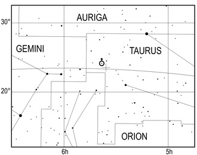

Earth is the third planet from the Sun and the only astronomical object known to harbor life. This is enabled by Earth being a water world, the only one in the Solar System sustaining liquid surface water. Almost all of Earth's water is contained in its global ocean, covering 70.8% of Earth's crust. The remaining 29.2% of Earth's crust is land, most of which is located in the form of continental landmasses within one hemisphere, Earth's land hemisphere. Most of Earth's land is somewhat humid and covered by vegetation, while large sheets of ice at Earth's polar deserts retain more water than Earth's groundwater, lakes, rivers and atmospheric water combined. Earth's crust consists of slowly moving tectonic plates, which interact to produce mountain ranges, volcanoes, and earthquakes. Earth has a liquid outer core that generates a magnetosphere capable of deflecting most of the destructive solar winds and cosmic radiation.
Earth has a dynamic atmosphere, which sustains Earth's surface conditions and protects it from most meteoroids and UV-light at entry. It has a composition of primarily nitrogen and oxygen. Water vapor is widely present in the atmosphere, forming clouds that cover most of the planet. The water vapor acts as a greenhouse gas and, together with other greenhouse gases in the atmosphere, particularly carbon dioxide (CO2), creates the conditions for both liquid surface water and water vapor to persist via the capturing of energy from the Sun's light. This process maintains the current average surface temperature of 14.76 °C, at which water is liquid under atmospheric pressure. Differences in the amount of captured energy between geographic regions (as with the equatorial region receiving more sunlight than the polar regions) drive atmospheric and ocean currents, producing a global climate system with different climate regions, and a range of weather phenomena such as precipitation, allowing components such as nitrogen to cycle.
Earth is rounded into an ellipsoid with a circumference of about 40,000 km. It is the densest planet in the Solar System. Of the four rocky planets, it is the largest and most massive. Earth is about eight light-minutes away from the Sun and orbits it, taking a year (about 365.25 days) to complete one revolution. Earth rotates around its own axis in slightly less than a day (in about 23 hours and 56 minutes). Earth's axis of rotation is tilted with respect to the perpendicular to its orbital plane around the Sun, producing seasons. Earth is orbited by one permanent natural satellite, the Moon, which orbits Earth at 384,400 km (1.28 light seconds) and is roughly a quarter as wide as Earth. The Moon's gravity helps stabilize Earth's axis, and also causes tides which gradually slow Earth's rotation. As a result of tidal locking, the same side of the Moon always faces Earth.
Etymology
The Modern English word Earth developed, via Middle English, from an Old English noun most often spelled eorðe.[24] It has cognates in every Germanic language, and their ancestral root has been reconstructed as *erþō. In its earliest attestation, the word eorðe was used to translate the many senses of Latin terra and Greek γῆ gē: the ground, its soil, dry land, the human world, the surface of the world (including the sea), and the globe itself. As with Roman Terra/Tellūs and Greek Gaia, Earth may have been a personified goddess in Germanic paganism: late Norse mythology included Jörð ("Earth"), a giantess often given as the mother of Thor.[25] Historically, "earth" has been written in lowercase. Beginning with the use of Early Middle English, its definite sense as "the globe" was expressed as "the earth". By the era of Early Modern English, capitalization of nouns began to prevail, and the earth was also written the Earth, particularly when referenced along with other heavenly bodies. More recently, the name is sometimes simply given as Earth, by analogy with the names of the other planets, though "earth" and forms with "the earth" remain common.[24] House styles now vary: Oxford spelling recognizes the lowercase form as the most common, with the capitalized form an acceptable variant. Another convention capitalizes "Earth" when appearing as a name, such as a description of the "Earth's atmosphere", but employs the lowercase when it is preceded by "the", such as "the atmosphere of the earth"). It almost always appears in lowercase in colloquial expressions such as "what on earth are you doing?"
Formation
Further information: Early Earth and Hadean
A 2012 artistic impression of the early Solar System's protoplanetary disk from which Earth and other Solar System bodies were formed
The oldest material found in the Solar System is dated to 4.5682+0.0002
−0.0004 Ga (billion years) ago.[35] By 4.54±0.04 Ga the primordial Earth had formed.[36] The bodies in the Solar System formed and evolved with the Sun. In theory, a solar nebula partitions a volume out of a molecular cloud by gravitational collapse, which begins to spin and flatten into a circumstellar disk, and then the planets grow out of that disk with the Sun. A nebula contains gas, ice grains, and dust (including primordial nuclides). According to nebular theory, planetesimals formed by accretion, with the primordial Earth being estimated as likely taking anywhere from 70 to 100 million years to form.
Estimates of the age of the Moon range from 4.5 Ga to significantly younger.[38] A leading hypothesis is that it was formed by accretion from material loosed from Earth after a Mars-sized object with about 10% of Earth's mass, named Theia, collided with Earth.[39] It hit Earth with a glancing blow and some of its mass merged with Earth.[40][41] Between approximately 4.1 and 3.8 Ga, numerous asteroid impacts during the Late Heavy Bombardment caused significant changes to the greater surface environment of the Moon and, by inference, to that of Earth.
After formation
Earth's atmosphere and oceans were formed by volcanic activity and outgassing.[44] Water vapor from these sources condensed into the oceans, augmented by water and ice from asteroids, protoplanets, and comets.[45] Sufficient water to fill the oceans may have been on Earth since it formed.[46] In this model, atmospheric greenhouse gases kept the oceans from freezing when the newly forming Sun had only 70% of its current luminosity.[47] By 3.5 Ga, Earth's magnetic field was established, which helped prevent the atmosphere from being stripped away by the solar wind.[48]
As the molten outer layer of Earth cooled it formed the first solid crust, which is thought to have been mafic in composition. The first continental crust, which was more felsic in composition, formed by the partial melting of this mafic crust.[49] The presence of grains of the mineral zircon of Hadean age in Eoarchean sedimentary rocks suggests that at least some felsic crust existed as early as 4.4 Ga, only 140 Ma after Earth's formation.[50] There are two main models of how this initial small volume of continental crust evolved to reach its current abundance:[51] (1) a relatively steady growth up to the present day,[52] which is supported by the radiometric dating of continental crust globally and (2) an initial rapid growth in the volume of continental crust during the Archean, forming the bulk of the continental crust that now exists,[53][54] which is supported by isotopic evidence from hafnium in zircons and neodymium in sedimentary rocks. The two models and the data that support them can be reconciled by large-scale recycling of the continental crust, particularly during the early stages of Earth's history.

New continental crust forms as a result of plate tectonics, a process ultimately driven by the continuous loss of heat from Earth's interior. Over the period of hundreds of millions of years, tectonic forces have caused areas of continental crust to group together to form supercontinents that have subsequently broken apart. At approximately 750 Ma, one of the earliest known supercontinents, Rodinia, began to break apart. The continents later recombined to form Pannotia at 600–540 Ma, then finally Pangaea, which also began to break apart at 180 Ma.
Origin of life and evolution
Chimecal reaction led to the first self-replicating molecules about four billion years ago. A half billion years later, the last common ancestor of all current life arose.[62] The evolution of photosynthesis allowed the Sun's energy to be harvested directly by life forms. The resultant molecular oxygen (O2) accumulated in the atmosphere and due to interaction with ultraviolet solar radiation, formed a protective ozone layer (O3) in the upper atmosphere.[63] The incorporation of smaller cells within larger ones resulted in the development of complex cells called eukaryotes.[64] True multicellular organisms formed as cells within colonies became increasingly specialized. Aided by the absorption of harmful ultraviolet radiation by the ozone layer, life colonized Earth's surface.[65] Among the earliest fossil evidence for life is microbial mat fossils found in 3.48 billion-year-old sandstone in Western Australia,[66] biogenic graphite found in 3.7 billion-year-old metasedimentary rocks in Western Greenland,[67] and remains of biotic material found in 4.1 billion-year-old rocks in Western Australia.[68][69] The earliest direct evidence of life on Earth is contained in 3.45 billion-year-old Australian rocks showing fossils of microorganisms
Future
Earth's expected long-term future is tied to that of the Sun. Over the next 1.1 billion years, solar luminosity will increase by 10%, and over the next 3.5 billion years by 40%.[77] Earth's increasing surface temperature will accelerate the inorganic carbon cycle, reducing CO2 concentration to levels lethally low for plants (10 ppm for C4 photosynthesis) in approximately 100–900 million years.[78][79] The lack of vegetation will result in the loss of oxygen in the atmosphere, making animal life impossible.[80] Due to the increased luminosity, Earth's mean temperature may reach 100 °C (212 °F) in 1.5 billion years, and all ocean water will evaporate and be lost to space, which may trigger a runaway greenhouse effect, within an estimated 1.6 to 3 billion years.[81] Even if the Sun were stable, a fraction of the water in the modern oceans will descend to the mantle, due to reduced steam venting from mid-ocean ridges.